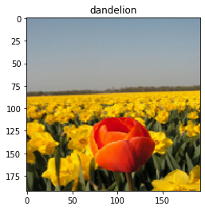
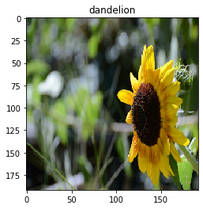

[1]:
# this cell contains code to build the flower
# source https://www.tensorflow.org/tutorials/load_data/images
import pathlib
import random
import os
import tensorflow.compat.v1 as tf
tf.disable_v2_behavior()
tf.enable_eager_execution()
import IPython.display as display
tf.__version__
print("downloading images")
data_root_orig = tf.keras.utils.get_file('flower_photos',
'https://storage.googleapis.com/download.tensorflow.org/example_images/flower_photos.tgz',
untar=True)
data_root = pathlib.Path(data_root_orig)
print("images are stored in {}".format(data_root))
all_image_paths = list(data_root.glob('*/*'))
all_image_paths = [str(path) for path in all_image_paths]
random.shuffle(all_image_paths)
image_count = len(all_image_paths)
print("there are {} images".format(image_count))
attributions = (data_root/"LICENSE.txt").open(encoding='utf-8').readlines()[4:]
attributions = [line.split(' CC-BY') for line in attributions]
attributions = dict(attributions)
def caption_image(image_path):
image_rel = pathlib.Path(image_path).relative_to(data_root)
return "Image (CC BY 2.0) " + ' - '.join(attributions[str(image_rel)].split(' - ')[:-1])
def preprocess_image(image):
image = tf.image.decode_jpeg(image, channels=3)
image = tf.image.resize(image, [192, 192])
image /= 255.0 # normalize to [0,1] range
return image
def load_and_preprocess_image(path):
image = tf.read_file(path)
return preprocess_image(image)
def change_range(image,label):
return 2*image-1, label
AUTOTUNE = tf.data.experimental.AUTOTUNE
label_names = sorted(item.name for item in data_root.glob('*/') if item.is_dir())
label_to_index = dict((name, index) for index,name in enumerate(label_names))
all_image_labels = [label_to_index[pathlib.Path(path).parent.name]
for path in all_image_paths]
path_ds = tf.data.Dataset.from_tensor_slices(all_image_paths)
image_ds = path_ds.map(load_and_preprocess_image, num_parallel_calls=AUTOTUNE)
label_ds = tf.data.Dataset.from_tensor_slices(tf.cast(all_image_labels, tf.int64))
image_label_ds = tf.data.Dataset.zip((image_ds, label_ds))
BATCH_SIZE = 32
ds = image_label_ds.apply(
tf.data.experimental.shuffle_and_repeat(buffer_size=image_count))
ds = ds.batch(BATCH_SIZE)
ds = ds.prefetch(buffer_size=AUTOTUNE)
mobile_net = tf.keras.applications.MobileNetV2(input_shape=(192, 192, 3), include_top=False)
mobile_net.trainable=False
keras_ds = ds.map(change_range)
model = tf.keras.Sequential([
mobile_net,
tf.keras.layers.GlobalAveragePooling2D(),
tf.keras.layers.Dense(len(label_names))])
model.compile(optimizer='adam',
loss=tf.keras.losses.sparse_categorical_crossentropy,
metrics=["accuracy"])
model.summary()
model.fit(ds, epochs=1, steps_per_epoch=3)
WARNING:tensorflow:From /home/patrick/.conda/envs/omegamlpy3-core/lib/python3.6/site-packages/tensorflow/python/compat/v2_compat.py:96: disable_resource_variables (from tensorflow.python.ops.variable_scope) is deprecated and will be removed in a future version.
Instructions for updating:
non-resource variables are not supported in the long term
downloading images
images are stored in /home/patrick/.keras/datasets/flower_photos
there are 3670 images
WARNING:tensorflow:From <ipython-input-1-f795709750d8>:63: shuffle_and_repeat (from tensorflow.python.data.experimental.ops.shuffle_ops) is deprecated and will be removed in a future version.
Instructions for updating:
Use `tf.data.Dataset.shuffle(buffer_size, seed)` followed by `tf.data.Dataset.repeat(count)`. Static tf.data optimizations will take care of using the fused implementation.
Model: "sequential"
_________________________________________________________________
Layer (type) Output Shape Param #
=================================================================
mobilenetv2_1.00_192 (Model) (None, 6, 6, 1280) 2257984
_________________________________________________________________
global_average_pooling2d (Gl (None, 1280) 0
_________________________________________________________________
dense (Dense) (None, 5) 6405
=================================================================
Total params: 2,264,389
Trainable params: 6,405
Non-trainable params: 2,257,984
_________________________________________________________________
3/3 [==============================] - 1s 359ms/step - loss: 9.2209 - accuracy: 0.1458
[1]:
<tensorflow.python.keras.callbacks.History at 0x7fab57e2b2b0>
[2]:
# deploy the fitted model to omega|ml
import numpy as np
import omegaml as om
om.models.put(model, 'tfkeras-flower')
/home/patrick/.conda/envs/omegamlpy3-core/lib/python3.6/site-packages/celery/fixups/django.py:44: FixupWarning: Environment variable DJANGO_SETTINGS_MODULE is defined
but Django isn't installed. Won't apply Django fix-ups!
warnings.warn(FixupWarning(ERR_NOT_INSTALLED))
[2]:
<Metadata: Metadata(name=tfkeras-flower,bucket=omegaml,prefix=models/,kind=tfkeras.h5,created=2020-07-17 17:44:14.655000)>
[3]:
# use the model for prediction (Python API)
%matplotlib inline
from matplotlib import pyplot as plt
# loading the model can take some time
model_ = om.models.get('tfkeras-flower')
for img in image_ds.take(2):
result = model_.predict(np.array([img.numpy()]))
label = label_names[np.argmax(result)]
fig = plt.figure()
plt.title(label)
plt.imshow(img)


[4]:
# start async prediction
results = []
for img in image_ds.take(2):
result = om.runtime.model('tfkeras-flower').predict(np.array([img.numpy()]))
results.append(result)
# get results and show
for result in results:
label = label_names[np.argmax(result.get())]
fig = plt.figure()
plt.title(label)
plt.imshow(img)


[5]:
# REST API
%load_ext autoreload
%autoreload 2
import requests
from omegaml.client.auth import OmegaRestApiAuth
# -- setup authentication and API URL
auth = OmegaRestApiAuth.make_from(om)
base_url = getattr(om.defaults, 'OMEGA_RESTAPI_URL', 'http://localhost:5000')
predict_url = '{base_url}/api/v1/model/tfkeras-flower/predict'.format(**locals())
for img in image_ds.take(2):
# take picture
imgdata = img.numpy()
# predict
resp = requests.put(predict_url, json={
'columns': ['x'],
'data': [{'x': imgdata.flatten().tolist()}],
'shape': [192, 192, 3],
}, auth=auth)
# show result
data = resp.json()
prediction = data['result']
label = label_names[np.argmax(prediction)]
fig = plt.figure()
plt.title(label)
plt.imshow(imgdata)


[6]:
# save model as a a Tensorflow SavedModel
# -- note this may print several tensorflow warnings due to deprecated functionality
model_ = om.models.get('tfkeras-flower')
om.models.put(model_, 'tfkeras-flower-savedmodel', as_savedmodel=True)
[6]:
<Metadata: Metadata(name=tfkeras-flower-savedmodel,bucket=omegaml,prefix=models/,kind=tfkeras.savedmodel,created=2020-07-17 17:46:27.760955)>
[7]:
# use the SavedModel instance
import omegaml as om
import requests
from omegaml.client.auth import OmegaRestApiAuth
import omegaml as om
# -- setup authentication and API URL
auth = OmegaRestApiAuth.make_from(om)
base_url = getattr(om.defaults, 'OMEGA_RESTAPI_URL', 'http://localhost:5000')
predict_url = '{base_url}/api/v1/model/tfkeras-flower-savedmodel/predict'.format(**locals())
print(predict_url)
for img in image_ds.take(2):
# take picture
imgdata = img.numpy()
# predict
resp = requests.put(predict_url, json={
'columns': ['x'],
'data': [{'x': imgdata.flatten().tolist()}],
'shape': [192, 192, 3],
}, auth=auth)
# show result
data = resp.json()
prediction = data['result']
label = label_names[np.argmax(prediction)]
fig = plt.figure()
plt.title(label)
plt.imshow(imgdata)
http://localhost:5000/api/v1/model/tfkeras-flower-savedmodel/predict


[8]:
print(label_names)
['daisy', 'dandelion', 'roses', 'sunflowers', 'tulips']
[9]:
# use a virtualobj to perform business logic on model input and output
from omegaml.backends.virtualobj import virtualobj
@virtualobj
def mymodel(data=None, method=None, meta=None, store=None, **kwargs):
# in a virutalobj handler, always import modules locally
import numpy as np
models = store
if method == 'predict':
label_names = ['daisy', 'dandelion', 'roses', 'sunflowers', 'tulips']
# do some pre-processing, e.g. to ensure the shape matches the model input layer
X = np.array([data])
# pass on to the model in required input shape
result = models.get('tfkeras-flower-savedmodel').predict(X)
# return labels instead of numeric result
return label_names[np.argmax(result)]
# store an image
for img in image_ds.take(1):
om.datasets.put(img.numpy(), 'image')
# store the virtualobj handler as a model
om.models.drop('mymodel', force=True)
om.models.put(mymodel, 'mymodel')
# use the model REST API using the stored image
modelname = 'mymodel'
dataset = 'image'
predict_url = '{base_url}/api/v1/model/{modelname}/predict?datax={dataset}'.format(**locals())
resp = requests.put(predict_url, auth=auth)
print(resp.json())
{'model': 'mymodel', 'result': 'dandelion', 'resource_uri': None}
[10]:
# deploy an unfitted model version, fit in omega|ml runtime
mobile_net = tf.keras.applications.MobileNetV2(input_shape=(192, 192, 3), include_top=False)
mobile_net.trainable=False
keras_ds = ds.map(change_range)
model = tf.keras.Sequential([
mobile_net,
tf.keras.layers.GlobalAveragePooling2D(),
tf.keras.layers.Dense(len(label_names))])
model.compile(optimizer='adam',
loss=tf.keras.losses.sparse_categorical_crossentropy,
metrics=["accuracy"])
om.models.put(model, 'tfkeras-flower-unfitted')
[10]:
<Metadata: Metadata(name=tfkeras-flower-unfitted,bucket=omegaml,prefix=models/,kind=tfkeras.h5,created=2020-07-17 17:47:31.641895)>
[11]:
# store images. no need to use TFExample or TFRecord (however you can if you want to)
for i, (image, label) in enumerate(image_label_ds.take(100)):
om.datasets.put(image.numpy(), 'image-{i}-{label}'.format(i=i, label=int(label)))
[12]:
# virutalobj that returns a tf.Dataset
@virtualobj
def trainds(data=None, method=None, meta=None, store=None, **kwargs):
import tensorflow as tf
datasets = store
def get_images():
for name in datasets.list(regexp='image-[0-255]-.*'):
label = name.split('-')[-1]
img = datasets.get(name)
yield (img, label)
if method == 'get':
gen = get_images()
output_types = (tf.int64, tf.int64)
output_shapes = (tf.TensorShape([192, 192, 3]), tf.TensorShape([]))
ds = tf.data.Dataset.from_generator(get_images, output_types, output_shapes)
return ds.batch(32)
om.datasets.put(trainds, 'tfkeras-trainds', replace=True)
[12]:
<Metadata: Metadata(name=tfkeras-trainds,bucket=omegaml,prefix=data/,kind=virtualobj.dill,created=2020-07-17 17:47:33.370506)>
[13]:
# fit in cloud
om.runtime.model('tfkeras-flower-unfitted').fit('tfkeras-trainds', epochs=5).get()
[13]:
'<Metadata: Metadata(name=tfkeras-flower-unfitted,bucket=omegaml,prefix=models/,kind=tfkeras.h5,created=2020-07-17 17:47:31.641000)>'
[14]:
om.models.metadata('tfkeras-flower-unfitted').attributes['history']
[14]:
{'loss': [12.70943832397461,
8.822837829589844,
8.388612747192383,
8.05056095123291,
7.742785930633545],
'accuracy': [0.25, 0.25, 0.25, 0.25, 0.25]}